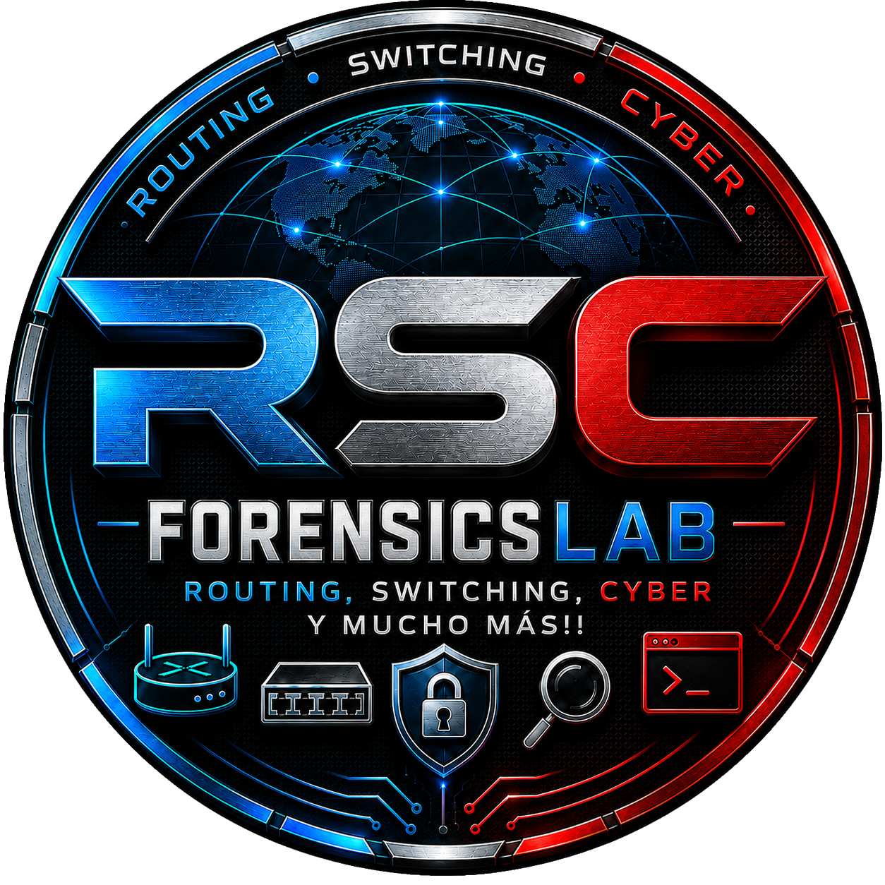
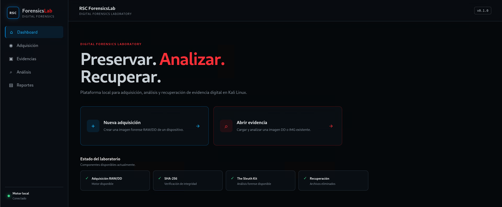

Adquisición RAW/DD
Cree imágenes físicas bit a bit de dispositivos removibles con controles de seguridad para proteger el disco del sistema.

Plataforma de análisis forense digital para Kali Linux orientada a adquisición física, verificación de integridad, análisis de sistemas de archivos, recuperación de archivos, file carving y generación de reportes forenses.
Controle desde una interfaz local la adquisición, importación y análisis de evidencias digitales, explore archivos activos y eliminados, recupere elementos y genere reportes forenses.

Interfaz de RSC ForensicsLab 0.1.0 ejecutándose en Kali Linux.
RSC ForensicsLab integra adquisición, análisis, recuperación y documentación dentro de un mismo entorno de trabajo.
Cree imágenes físicas bit a bit de dispositivos removibles con controles de seguridad para proteger el disco del sistema.
Calcule hashes SHA-256 y compare evidencias importadas contra valores de referencia proporcionados por el examinador.
Detecte particiones, sistemas de archivos, archivos activos, elementos eliminados y metadatos relevantes.
Recupere archivos eliminados desde la imagen forense preservando tamaño, origen y hash SHA-256.
Detecte archivos directamente mediante firmas y estructura interna incluso cuando no exista una entrada válida en el sistema de archivos.
Genere reportes con identificación del caso, integridad, estructura, archivos activos, eliminados, recuperados, carving y hallazgos.
La versión 0.1.0 integra funciones orientadas al trabajo con imágenes forenses RAW, DD e IMG.
RSC ForensicsLab se instala como aplicación del sistema y puede iniciarse desde el menú de aplicaciones o desde la terminal.
Descargue el paquete Debian oficial de RSC ForensicsLab 0.1.0 e instálelo directamente en Kali Linux.
Kali Linux • AMD64 • Versión 0.1.0
SHA-256:
d9696a75a3c23f3389ed1fe96111dc2b3096ad66f7c11c6304625af891ae4a42
RSC ForensicsLab forma parte de la familia de herramientas educativas RSC. Su propósito es facilitar el estudio práctico de adquisición, preservación, análisis, recuperación y documentación de evidencia digital dentro de entornos controlados de laboratorio y formación en ciberseguridad.